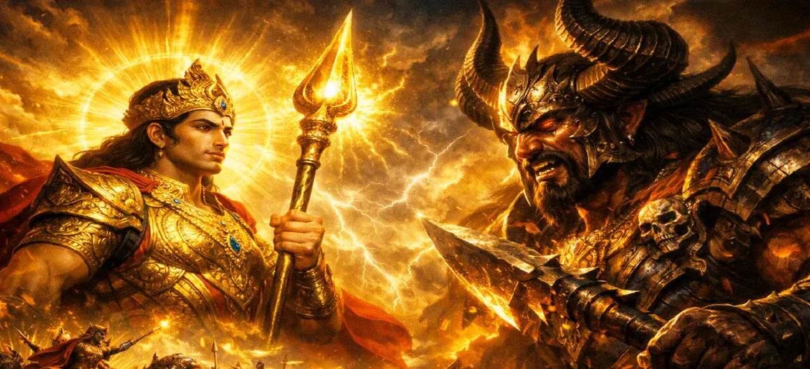

Kumāra Confronts Tārakāsura
Chapter 26 of the Kumara Khanda narrates the monumental face-to-face duel between Lord Skanda and the supreme demon tyrant Tārakāsura, marking the climax of the great celestial war.
As the demon king steps forward in absolute fury, heaven and earth hold their breath for the ultimate clash of cosmic forces.
Chapter 26 Highlights & Full Overview
Tyrant Enters
Tārakāsura steps onto the field to confront Kumāra directly.
Fierce Clash
An intense exchange of terrifying weapons and dark magic.
Unshakable Calm
Lord Skanda's divine poise in the face of the demon's wrath.
Cosmic Tremors
The universe shaking from the sheer power of the duel.
War of Titans
The ultimate trial of strength between light and absolute darkness.
Setting the Stage
Building up the tension for the decisive final blow.
Core Topics Detailed in This Chapter
1. Tārakāsura's Entry into Personal Combat
Seeing his mighty generals decimated and his demonic host fleeing before Kumāra’s radiant might, the supreme demon king Tārakāsura is consumed by raging fury. Roaring like thunder, he commands his grand chariot forward to challenge the young divine commander directly.
2. The Exchange of Words and Challenge
Before weapons clash, a formidable verbal exchange takes place. Tārakāsura boasts of his past boons, his unmatched conquests across the three worlds, and dismisses Kumāra as a mere child. Lord Skanda remains utterly calm, reminding the tyrant of the inescapable law of karma and divine justice.
3. The Terrifying Duel Begins
With a deafening roar, Tārakāsura unleashes a massive volley of dark, celestial-shattering weapons. Lord Skanda gracefully counters each missile with absolute precision, creating a dazzling display of lights and sparks that illuminate the dark canopy of the battlefield.
4. Demon's Illusionary Assaults vs. Divine Grace
Relying on his supreme boons, Tārakāsura conjures terrifying illusions—making mountains rain down, transforming the sky into oceans of fire, and multiplying his forms. Yet, through his innate divine consciousness, Kumāra effortlessly disperses every illusion as mere mist.
5. The Escalation of Cosmic Tension
The clash between Kumāra and Tārakāsura shakes the heavens and the netherworlds alike. Deities, sages, and celestial observers watch in rapt attention, realizing that this fierce duel has reached its critical pinnacle, where the destiny of the universe hangs by a thread.
6. Transition to Chapter 27 (The Death of Tārakāsura)
As the duel reaches its absolute climax and Tārakāsura’s arrogant resistance begins to falter under the unyielding pressure of divine might, the stage is set for the ultimate reckoning. This leads directly into Chapter 27: **The Death of Tārakāsura**.
Key Teachings and Spiritual Takeaways of Chapter 26
Inescapable Karma
Ego and tyranny must ultimately face the balance of justice.
Poise Under Fire
True spiritual strength remains calm amidst raging hostility.
Shattering Falsehood
Divine awareness effortlessly dissolves worldly illusions.
Confronting the Root
True resolution requires facing core negativity head-on.
Futility of Arrogance
Boasts and pride crumble before higher spiritual truth.
Climax of Struggle
The final test precedes the dawn of liberation.
Spiritual Reflection
Chapter 26 portrays the direct confrontation with deep-seated ego (Tārakāsura) through higher consciousness (Kumāra). When we stop avoiding our inner flaws and directly confront our deepest attachments with awareness and spiritual resolve, the final battle for self-transformation begins in earnest.
Living the Message of Chapter 26
Confront your personal challenges directly rather than postponing or ignoring them.
Maintain inner calm and emotional balance when faced with aggressive opposition.
Recognize that inner illusions dissolve quickly when exposed to clear, objective self-awareness.
Key Spiritual Concepts
The direct, face-to-face duel between opposing forces.
The final confrontation with entrenched ego and pride.
The dispelling of complex illusions through supreme truth.
The critical juncture where cosmic destiny is decided.
The unwavering intellect of the divine warrior.
The ultimate struggle before the triumph of righteousness.
Chapter Summary
Kumara Khanda Chapter 26 captures the thrilling face-to-face duel between Lord Skanda and the demon king Tārakāsura. As the tyrant steps onto the battlefield in supreme rage, a fierce confrontation of weapons, words, and magic unfolds, setting the absolute stage for the final defeat of evil in Chapter 27.
Frequently Asked Questions
1. What is the central focus of Kumara Khanda Chapter 26?
Chapter 26 focuses on the long-anticipated, direct confrontation and fierce combat between Lord Skanda (Kumāra) and the formidable demon king Tārakāsura.
2. How does Tārakāsura react when his army is defeated?
Filled with rage and pride, Tārakāsura personally steps onto the battlefield to challenge Lord Skanda face-to-face.
3. What chapter follows Chapter 26?
The next chapter is Chapter 27, titled 'The Death of Tārakāsura'.
“When the tyrant Tārakāsura stepped forward in fiery rage, Lord Skanda met him with unwavering poise, igniting the ultimate duel for the cosmos.”
Continue Through Kumara Khanda
Chapter 26 covers the direct confrontation with Tārakāsura. Continue to the next chapter, The Death of Tārakāsura.